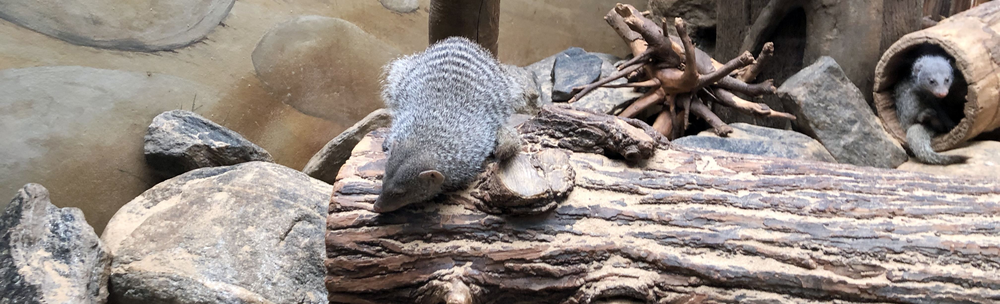
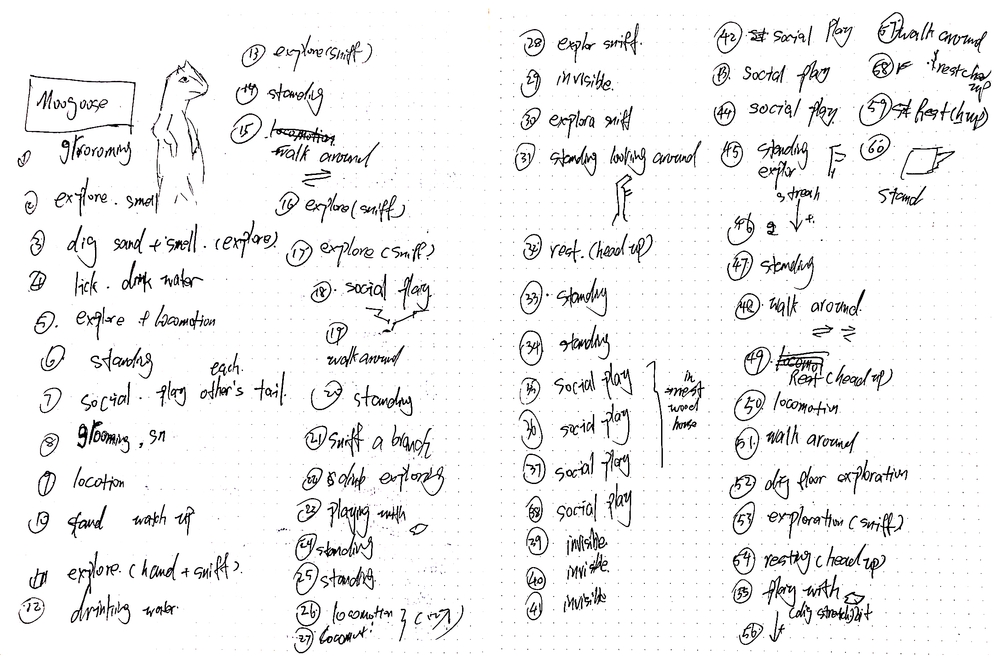
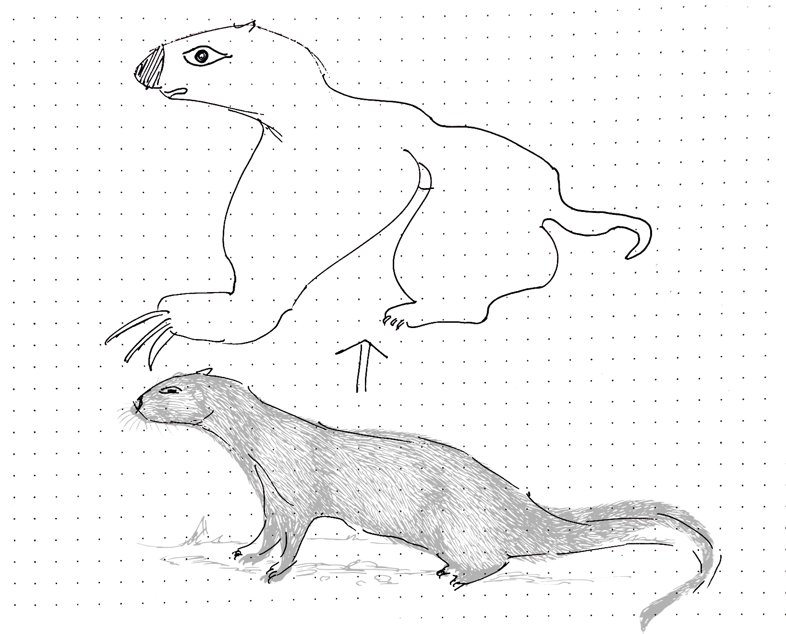

Field Trip:
intro:
a ethogram based on a 30 min live observation and a somatosensory homunculus for the mongooses in the Central Park Zoo, New York city.


Paper based ethogram:
I spent 30 minutes in observing a mongoose individual and record a paper-based ethogram for it.

| Frame Number | Interval Behavior | Frame Number | Interval Behavior |
|---|---|---|---|
| 1 | Self-grooming | 31 | Standing |
| 2 | General Exploration | 32 | Sitting |
| 3 | Excavate | 33 | Standing |
| 4 | Drinking | 34 | Standing |
| 5 | General Exploration | 35 | Social Playing |
| 6 | Standing | 36 | Social Playing |
| 7 | Social Grooming | 37 | Social Playing |
| 8 | Self-grooming | 38 | Social Playing |
| 9 | Locomotion | 39 | Animal Not Visible |
| 10 | Vigilance | 40 | Animal Not Visible |
| 11 | General Exploration | 41 | Animal Not Visible |
| 12 | Drinking | 42 | Social Play |
| 13 | General Exploration | 43 | Social Play |
| 14 | Standing | 44 | Social Play |
| 15 | Pacing | 45 | Standing |
| 16 | General Exploration | 46 | Standing |
| 17 | General Exploration | 47 | Standing |
| 18 | social Play | 48 | Pacing |
| 19 | Pacing | 49 | Sitting |
| 20 | Standing | 50 | Locomotion |
| 21 | General Exploration | 51 | Pacing |
| 22 | General Exploration | 52 | Excavate |
| 23 | Solitary Playing | 53 | General Exploration |
| 24 | Standing | 54 | Sitting |
| 25 | Standing | 55 | Solitary Playing |
| 26 | Locomotion | 56 | Solitary Playing |
| 27 | Locomotion | 57 | Pacing |
| 28 | General Exploration | 58 | Sitting |
| 29 | Animal Not Visible | 59 | Sitting |
| 30 | General Exploration | 60 | Standing |
Focal Point:
Three actions of the mongoose arouse my attention. The first one was that it spent a lot of time in sniffing around the ground to do general exploration. The second one was that it would stand upright to alert the surroundings. The third one was that it was keen on using its long paw to excavate the ground or the stone, shown as the video below.
Somatosensory homunculus:
